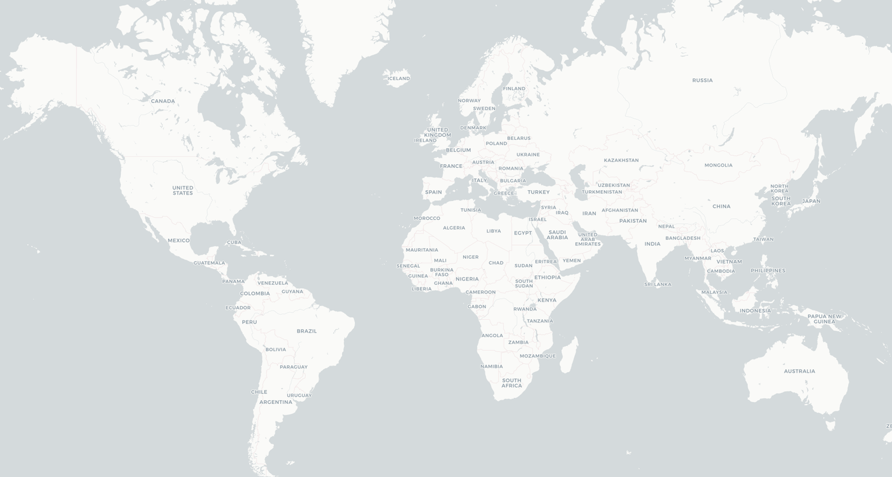
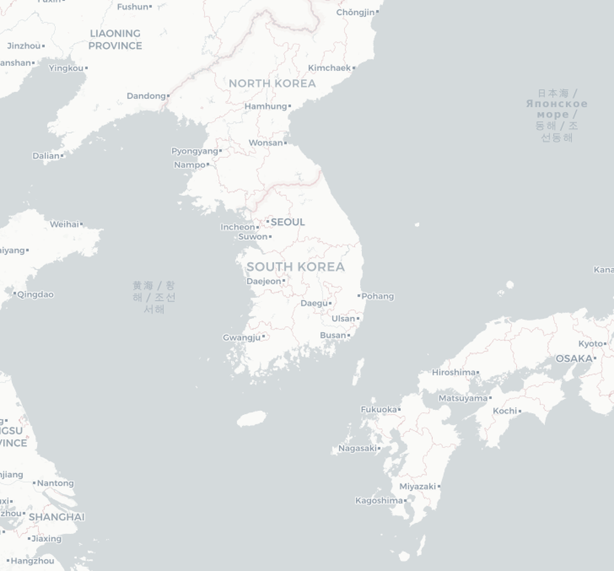

Reference data: MESH application casebook
Mode: interactive prototype
Amounts: budgetary product subtotal
Global Pipeline Map
지도 마커 또는 우측 프로젝트를 클릭하면 세부 정보로 이동합니다.

© OpenStreetMap contributors · © CARTO
Completed references + active pipeline
Use for global footprint communication
Working draft records
Global Footprint Map
완료 프로젝트와 진행 중 파이프라인을 함께 표시합니다.
© OpenStreetMap contributors · © CARTO
Domestic opportunity board
Korea map to detail workflow
Validated records can be refined later
Domestic Pipeline Map
대한민국 지도 마커 또는 우측 프로젝트를 클릭하면 세부 정보가 표시됩니다.

© OpenStreetMap contributors · © CARTO
4Domestic records
KRW 3.0B+Visible anchor scope
4Active candidates
2Public-sector quotes
Domestic Project List
working pipeline국내 지도 마커 또는 프로젝트를 선택하면 세부 정보가 표시됩니다.